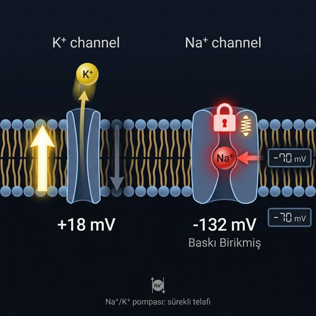

Öğrendiğin her şey aslında tek bir sorunun cevabı: Bir iyon zardan geçmek isteyecek mi? Bunu belirleyen iki kuvvet aynı anda etki eder.
Kimyasal kuvvet yoğundan seyreğe iter. Elektriksel kuvvet membran voltajından gelir — yükleri çeker. Bu ikisinin farkı sürücü kuvveti verir:
| İyon | Vm - Eiyon | Kuvvet | Sonuç |
|---|---|---|---|
| K⁺ | −70 − (−88) | +18 mV | Hafif dışarı sızar — sürekli kaçak |
| Na⁺ | −70 − (+62) | −132 mV | Kanal kapalı giremez — baskı birikmiş |
K⁺ hafifçe dışarı sızar → pompa geri alır. Na⁺ girmek için bekler → kanallar kapalı tutar. İki mekanizma aynı anda çalışır ve −70 mV sabit kalır.
Na⁺'un −132 mV'luk kuvveti boşa gitmiyor — birikmiş enerji olarak bekliyor. Aksiyon potansiyelinde kanallar açılır ve bu baskı serbest kalır: Na⁺ içeri hücum eder, içerisi hızla +30 mV'a fırlar. Sessizlik aslında tetiklenmeyi bekleyen bir gerilimdir.
−70 mV gerçek bir denge değil, aktif bir gerilim noktasıdır. K⁺ sızmak ister, Na⁺ girmek ister, pompa çalışır, kanallar bekler — hepsi aynı anda. Sessizlik aslında saniyede milyonlarca kez dönen mükemmel bir dengedir.
